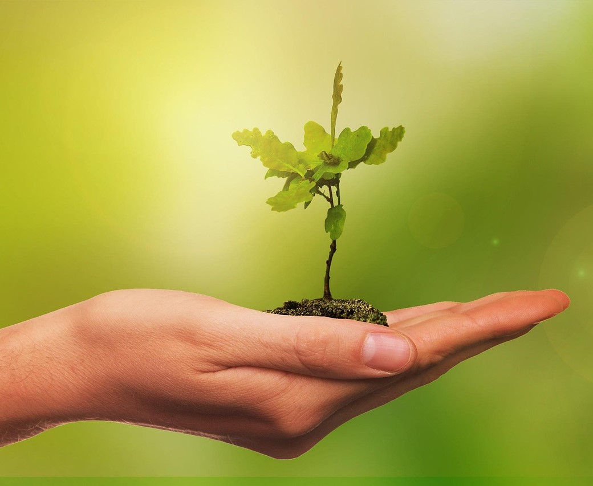
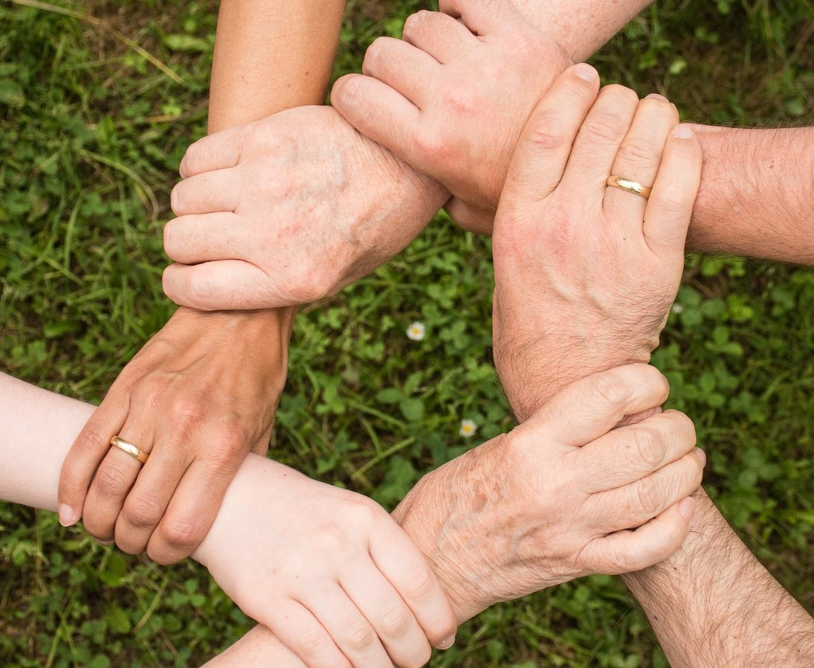
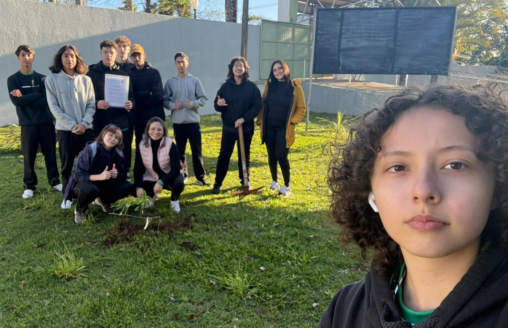
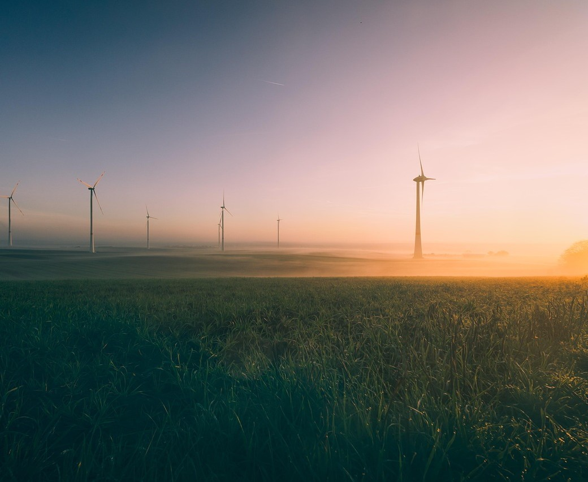

Contato
victor.mendes.souza@escola.pr.gov.br
A conexão campo-cidade é a relação de interdependência entre as áreas rurais e urbanas. O campo fornece alimentos e matérias-primas para a cidade, enquanto a cidade oferece serviços, tecnologias e mercados para o campo. Essa troca envolve aspectos econômicos, sociais, ambientais e culturais. Fortalecer essa conexão é importante para promover o desenvolvimento sustentável, reduzir desigualdades, valorizar a produção rural e melhorar a qualidade de vida em ambos os espaços.
A conexão entre campo e cidade é essencial e afeta a comunidade de diversas formas. O campo abastece a cidade com alimentos, enquanto a cidade oferece mercado e renda para os produtores rurais. A migração do campo para a cidade, muitas vezes causada pela falta de oportunidades, transforma a dinâmica das comunidades. Há também uma troca cultural importante, com valorização mútua entre tradições rurais e práticas urbanas. Além disso, a cidade depende dos recursos naturais do campo, o que torna fundamental uma relação sustentável. Quando bem estruturada, essa conexão incentiva melhorias na infraestrutura rural, reduz desigualdades e promove um desenvolvimento mais justo e equilibrado para todos.
O projeto "Verde que Alimenta" tem como objetivo promover a sustentabilidade e a segurança alimentar por meio do plantio de árvores frutíferas nativas e da criação de uma horta comunitária em Ibaiti. A iniciativa busca integrar a comunidade em ações de cuidado com o meio ambiente, fortalecendo a biodiversidade local e estimulando a produção de alimentos saudáveis e acessíveis. Além de contribuir com a preservação de espécies nativas e a melhoria da qualidade do solo e do ar, o projeto também incentiva a educação ambiental, o trabalho coletivo e a valorização do espaço urbano como território fértil e produtivo. Ao unir natureza e comunidade, o "Verde que Alimenta" semeia um futuro mais justo, verde e colaborativo.
A inovação a favor do meio ambiente busca soluções que preservem a natureza enquanto promovem o desenvolvimento. Ela aparece em tecnologias como energia limpa, agricultura sustentável, reciclagem e mobilidade elétrica. Também envolve mudanças de hábitos e atitudes, como o consumo consciente e a educação ambiental. Em resumo, é um caminho para crescer de forma inteligente, cuidando dos recursos naturais e garantindo um futuro melhor para todos.
victor.mendes.souza@escola.pr.gov.br